Sabae, Fukui: things to do, food and stays
Sabae · Fukui
Sabae
Highlighted on the Fukui map.

Stay
ホテルルートイン鯖江 -国道8号-
Hotel Route Inn Sabae - Kokudo 8 Go
Hotel in Shitakawabata, Sabae with a large communal bath; 6-minute drive from Sabae IC.
サバエ・シティーホテル
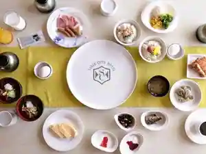
Sabae City Hotel
Hotel in Sakura, Sabae with breakfast available.
ホテルルートイン鯖江－国道８号－
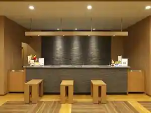
Hotel Route Inn Sabae - Kokudo 8 Go
Hotel in Shitakawabata, Sabae with Wi-Fi.
ホテル・アルファ－ワン鯖江
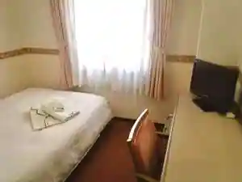
Hotel Arufa - Wan Sabae
Hotel in Asahi, Sabae; 5-minute drive from Hokurikujidoshadosabae IC.
Ｔａｂｉｓｔ ビジネスホテル おさむら
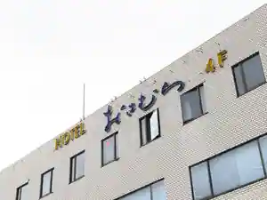
Tabist Business Hotel Osamura
Hotel in Hinode, Sabae with business travelers.
Tabist ホテルニューオサムラ 鯖江
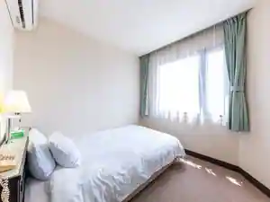
Tabist Hotel Nyuosamura Sabae
三六温泉 神明苑
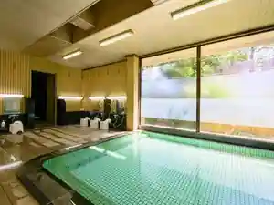
Sanroku Onsen Jinmei En
Inn at Sanroku Onsen in Jinmei, Sabae; 2-minute walk from Nenaikutsuroginoonsenyado~Jinmei Station.
鯖江第一ホテル
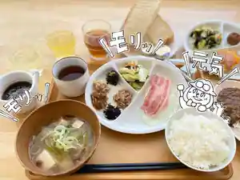
Sabae Daichi Hotel
Hotel in Shinyokoe, Sabae with parking; 2-minute drive from Yoshitatsuchisabae IC.
かわだ温泉 ラポーゼかわだ
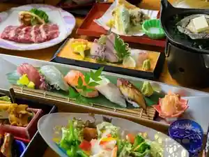
Kawada Onsen Rapoze Kawada
Inn at Kawada Onsen in Kamikawachi, Sabae.
Dining
亀蔵
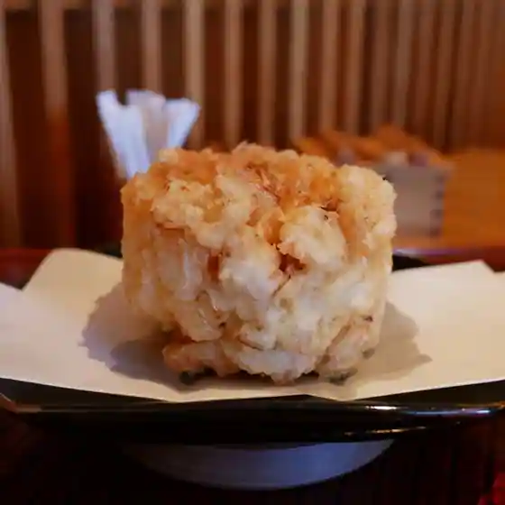
Kamezo
二男坊
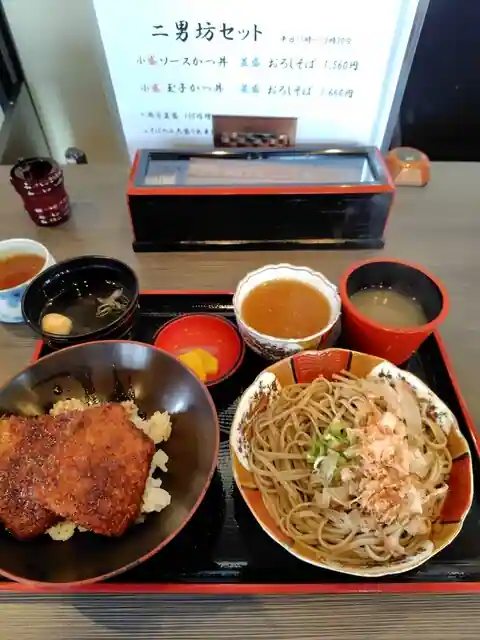
Jinan Bo
ヨーロッパン キムラヤ
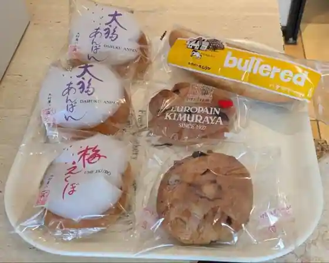
Yorotsu Bakery Kimuraya
味見屋
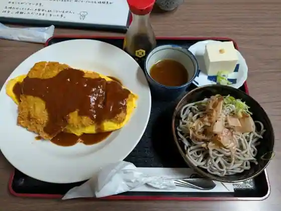
Ajimi Ya
らぁ麺まほろば 鯖江店
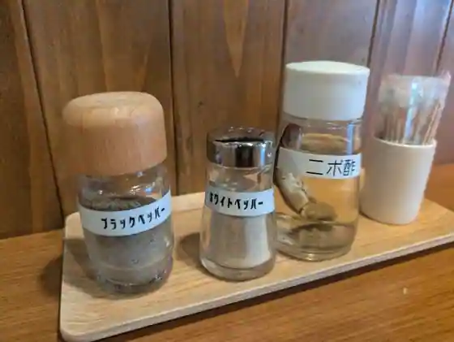
Ra Men Mahoroba Sabae
北鯖江パーキングエリア（下り線）フードコート
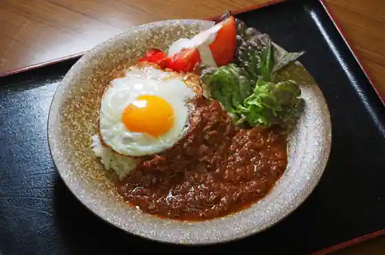
Kita Sabae Pakingueria (Kudari Sen) Fudokoto
中華そば Ryo
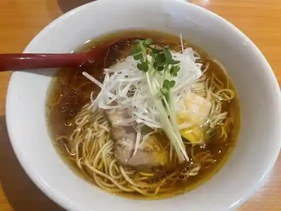
Chuka Soba Ryo
釜蔵
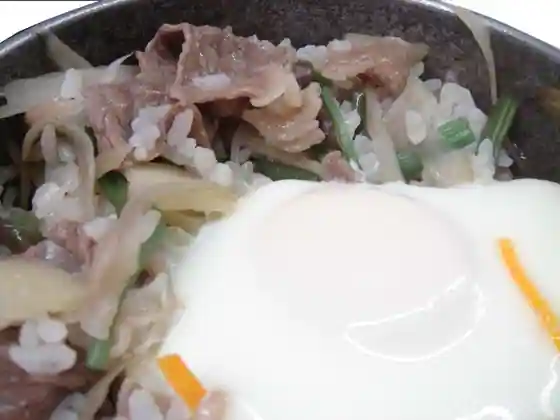
Kama Kura
欧風カレー専門店 ゴールデンカップ
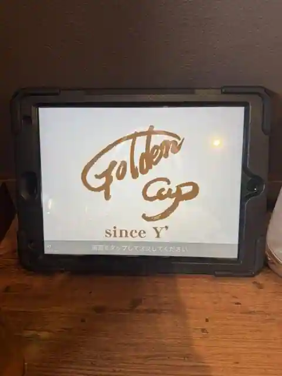
Ofu Kare Senmon Gorudenkappu
鯖の江
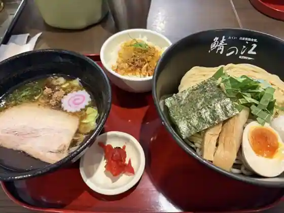
Saba No Ko
道の駅 西山公園
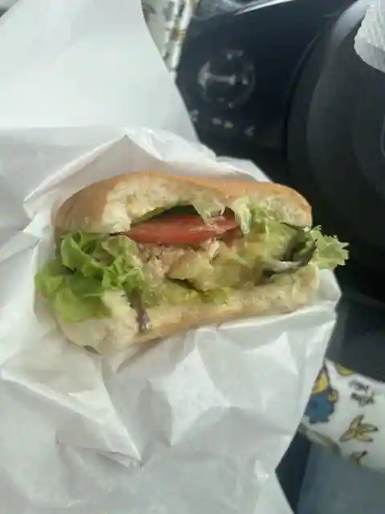
Michi No Eki Nishiyama Koen
めだか
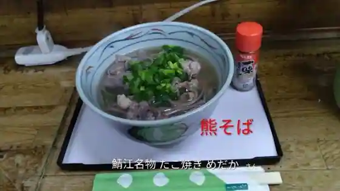
Medaka
シトラス
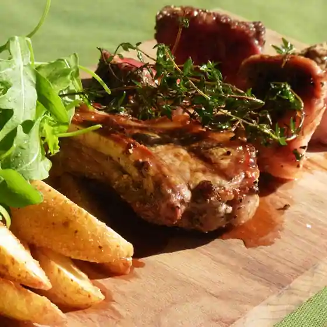
Shitorasu
ふたばや
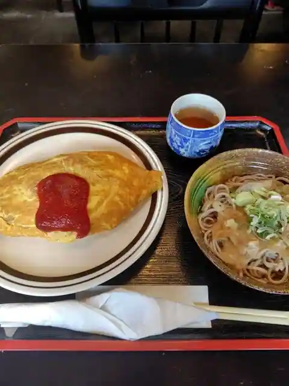
Futabaya
白樺
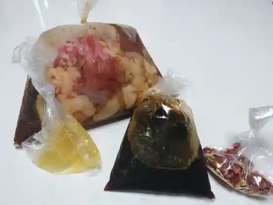
Shirakaba
ミート＆デリカささき
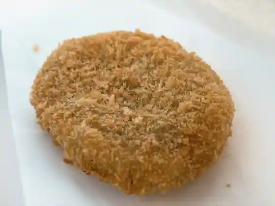
Mito & Derika Sasaki
御園飯店
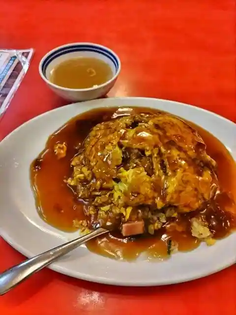
Misono Meshi
聴琴亭
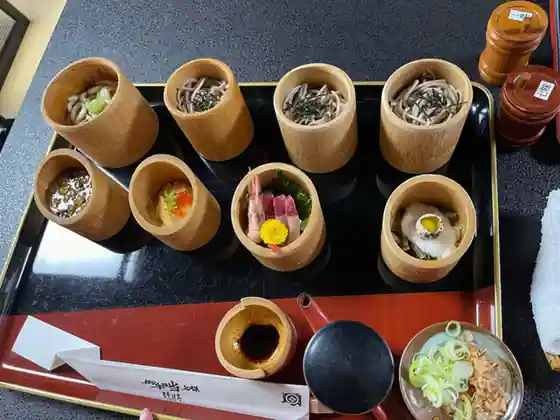
Cho Kon Tei
グリルセピア
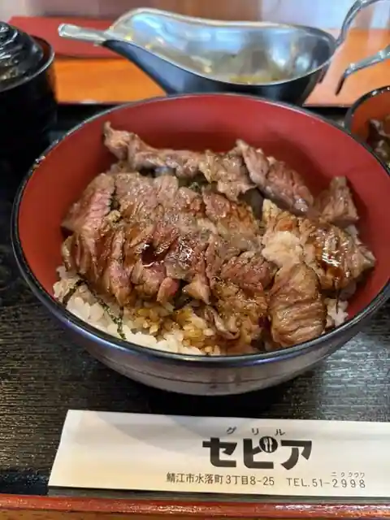
Gurirusepia
ときの蔵
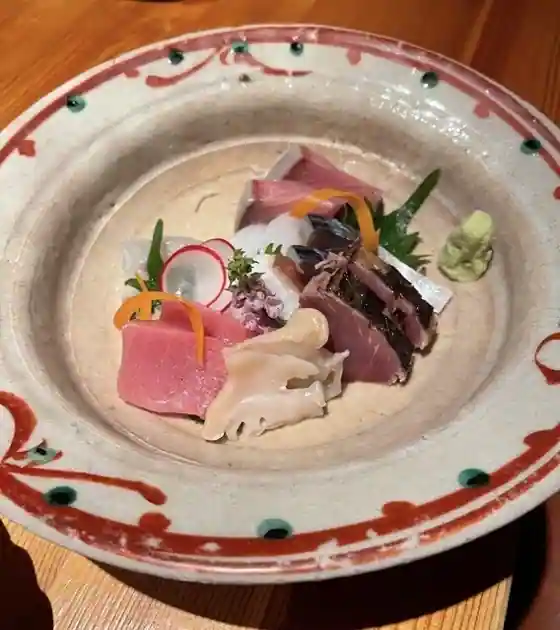
Tokino Kura
みきのや
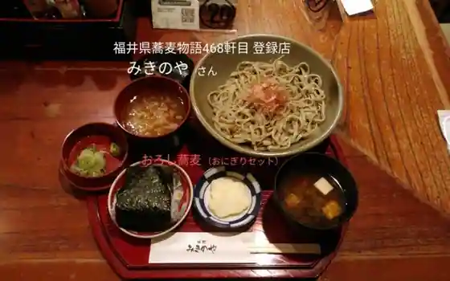
Mikinoya
天喰家
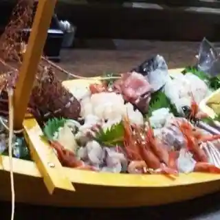
Shoku Ie
グリーンパーラー ベルベール
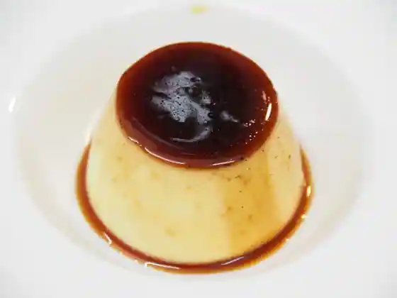
Gurinpara Beruberu
ペルシュ
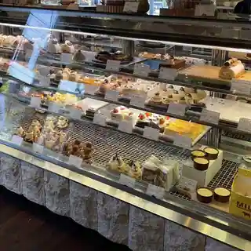
Perushu
Sights
Megane Museum
Nishiyama Park

Nishiyama Zoo

Urushi no Sato Hall

Kawada Onsen Rapoze Kawada

Roadside Station Nishiyama Park
Makoto City
Nishiyama Park no Tsutsuji
Nishiyama Park no Autumn Leaves
Panda Land Boken Forest (Nishiyama Park)
Honzan Makoto Sho Tera
Sabae Kyo Yo Hall
Manabe no Kan
Funatsu Shrine
Sabae Chiiki Koryu Center (Shimin Horu Tsutsuji)
Sanroku Onsen Jinmei En
Sabae Bunka Center
Musubi no Chaimu (Nishiyama Park)
Man Yoshi Tera
Ishida Shima Teori Ri Center (Sabae Sen'i Hall)
O Yama Kofun Gun
Sabae Sogo Gym
Sabae Han Karo Ueda Kacho Ya Mon
Nishi Ban Supotsu Center
Nishiyama Park Cherry Blossoms
Jizo Hashi
Kabutoyama Burial Mound
San Ba Saka Shimizu
Ka Ta Shiba Shrine
Togen Shimizu
Nokishita Workshop
Kyu Uryu Ie House
Mibu Oi Cho Plaza
Saito Mi Juro Ie no Hiiragi
Kinsho Monzaemon no Hi
Eko Farm Fune Eda (Na no Hanahata)